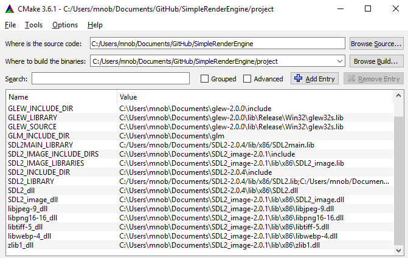
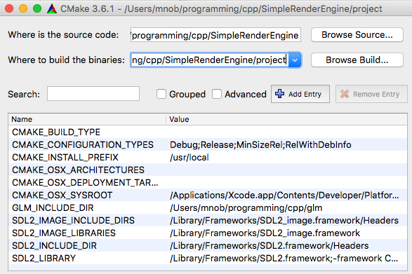

Introduction
The goal of SimpleRenderEngine (SRE) is to provide easy way to get started with graphics programming in 2D or 3D without a deep knowledge about the low-level graphics APIs like OpenGL, DirectX and Vulkan.
SRE currently depends on Simple Direct Layer 2.x (SDL2), SDL2-image, OpenGL Mathematics (GLM), and OpenGL 3.3 (or higher), and runs on both Windows, macOS and Linux.
The project is hosted here: https://github.com/mortennobel/SimpleRenderEngine
Install
Prerequisites:
- Install C++ tool chain / IDE (such as Visual Studio 2015 or XCode)
- Install CMake ( https://cmake.org/download/ ). macOS: first lauch should be performed by right-clicking the .app and selecting open.
SDL 2.x and SDL 2.0 Image
Simple DirectMedia Layer is a platform abstraction layer for game development. The abstraction makes both single platform and cross platform development easier. The project has a simple C-interface.
Download development libraries (not runtime libraries!) from
- https://www.libsdl.org/download-2.0.php
- https://www.libsdl.org/projects/SDL_image/
Windows: Extract the zip-files to any folder (e.g. Documents)
macOS: Open dmg files and copy .frameworks to /Library/Framework
SDL documentation can be found here: http://wiki.libsdl.org/FrontPage
GLM (OpenGL Mathematics)
GLM is a header-only C++ library for linear algebra such as vectors, matrices and quaternions.
Download project from http://glm.g-truc.net and extract to any folder. (e.g. Documents)
GLEW (The OpenGL Extension Wrangler Library)
(Windows only) Enable full OpenGL support for Windows.
Download the Windows 32-bit and 64-bit zip-file from http://glew.sourceforge.net/ and extract it to any folder (e.g. Documents).
Download and setup SimpleRenderEngine
Clone the repository from https://github.com/mortennobel/SimpleRenderEngine .
Configure the project using CMake ( / cmake-gui) to VisualStudio/XCode using the following settings:
Tips and comments:
- Windows : It is recommended that you build the project as 32-bit.
- It is important that you choose the correct
- You need to click the configure whenever you have changed a setting. This ensures that all
- Documentation for the CMake properties can be found in the cmake/FindXXX.cmake files
- It is recommended to GLEW static library (glew32s.lib) for windows.
- If you have old Visual Studio installation, you might need to change the settings of the Microsoft.Cpp.Win32.user (in the Property Manager)
Windows
Notes:
- The SDL2_Library need to be the full path of both SDL2.lib and SDL2main.lib. Separated with a semicolon.

Mac

Resource management
SimpleRenderEngine does not provide any automatically resource management. It is up the library user (the developer) to destroy any object that is allocated.
Generally objects can be created in three different ways:
- Constructor: Object creation using constructor. If the objects are allocated on the heap (using new) they must also be explicit deleted when no longer used.
- createXXX(): Object pointers returned from createXXX member functions. These objects are created by SimpleRenderEngine, but not referenced. These objects should be explicit deleted when no longer used.
- getXXX(): Object pointers returned from getXXX member functions. The ownership of these objects are maintained by SimpleRenderEngine. These objects should not be deleted.
SimpleRenderEngine
// Example (hello-engine.cpp):
SDL_Window *window;
SDL_Init(SDL_INIT_VIDEO);
SDL_GL_SetAttribute(SDL_GL_CONTEXT_MAJOR_VERSION, 3);
SDL_GL_SetAttribute(SDL_GL_CONTEXT_MINOR_VERSION, 1);
SDL_GL_SetAttribute(SDL_GL_CONTEXT_PROFILE_MASK, SDL_GL_CONTEXT_PROFILE_CORE);
window = SDL_CreateWindow("Hello Engine",SDL_WINDOWPOS_UNDEFINED,SDL_WINDOWPOS_UNDEFINED,640,480,SDL_WINDOW_OPENGL);
SimpleRenderEngine r{window};
r.clearScreen({1,0,0,1});
r.swapWindow();
SDL_Delay(10000);
SD_DestroyWindow(window);
SDL_Quit();
Maintains shared states for rendering. An object of SimpleRenderEngine must be created once after the SDL_Window has been initialized. After initialization this object can be referenced using the static field SimpleRenderEngine::instance;
SingleRenderEngine has two important states:
- An active camera, which defines how meshes are drawn when rendered using the draw method
- Light information (point lights, directional lights, ambient lights).
SimpleRenderEngine
SimpleRenderEngine(SDL_Window *window)
SimpleRenderEngine constructor
| Parameter | Description |
|---|---|
| window | window pointer to the SDL window (must be initialized using OpenGL) |
setLight
void setLight(int lightIndex, Light light)
Set the light state - this affects all draw calls after the state has been set.
| Parameter | Description |
|---|---|
| lightIndex | must be between 0 and 3 |
| light | light parameters |
getLight
Light getLight(int lightIndex)
Returns the state of the given light index
| Parameter | Description |
|---|---|
| lightIndex | must be between 0 and 3 |
setAmbient
void setAmbientLight(const glm::vec3 &ambientLight)
Set the ambient light color. This is used to add some light to the shadow side of objects.
| Parameter | Description |
|---|---|
| ambientLight | ambient light (usually should be low) (default: 0.2,0.2,0.2) |
getAmbient
glm::vec3 getAmbientLight() const
Returns ambient light
draw
void draw(Mesh *mesh, glm::mat4 modelTransform, Shader *shader)
void draw(ParticleMesh *mesh, glm::mat4 modelTransform, Shader *shader)
Draws a mesh instance to the current scene. Uses the current camera object to render the mesh in the scene.
| Parameter | Description |
|---|---|
| mesh | The mesh to draw |
| modelTransform | The local to world transformation (usually composed of translations, rotations and scales) |
| shader | The shader used for rendering |
Note when drawing a particle mesh, the shader must have a particle mesh layout.
setCamera
void setCamera(Camera *camera)
Sets the current camera object.
| Parameter | Description |
|---|---|
| camera | The new camera state |
getCamera
Camera* getCamera()
Returns the current camera object.
getDefaultCamera
Camera* getDefaultCamera()
Returns a reference to the default camera. This camera is owned by the object and should never be deleted.
clearScreen
void clearScreen(glm::vec4 color, bool clearColorBuffer=true, bool clearDepthBuffer=true)
Clear the screen with the given color (default behavior is also clearing color and depth buffer)
| Parameter | Description |
|---|---|
| color | Clear color |
| clearColorBuffer | Will clear color buffer |
| clearDepthBuffer | Will clear depth buffer |
swapWindow
void swapWindow()
Update window with OpenGL rendering.
instance
static SimpleRenderEngine* instance
Singleton reference to the engine after initialization.
Texture
Represent a texture (uploaded to the GPU). In general the width and the height of the texture should be power-of-two (e.g. 256 or 512).
Textures can be created from files (png or jpeg). Alternative textures can be created using memory representation of the texture in RGBA (one byte per color channel).
The Texture class also provides a white texture using the Texture::getWhiteTexture()
A texture object has the following properties:
- mipmaps enabled: Optimization, where the texture exists in downscaled versions. This does use more memory, but in general gives faster texture sampling.
- wrap texture coordinates: if enabled the texture is repeated when sampling out the 0.0 .. 1.0 values
- filter sampling: if enabled the texture sampling will use interpolation to find the colors between pixel centers
createFromFile
static Texture* createFromFile(const char *pngOrJpeg, bool generateMipmaps = false)
createFromMem
static Texture* createFromMem(const char *pngOrJpeg, int size, bool generateMipmaps = false)
createFromRGBAMem
static Texture* createFromRGBAMem(const char *data, int width, int height, bool generateMipmaps = false)
getWhiteTexture
static Texture* getWhiteTexture()
getSphereTexture
static Texture* getSphereTexture()
getWidth
int getWidth()
getHeight
int getHeight()
isFilterSampling
bool isFilterSampling()
returns true if texture sampling should be filtered (bi-linear or tri-linear sampling) otherwise use point sampling.
setFilterSampling
void setFilterSampling(bool enable)
if true texture sampling is filtered (bi-linear or tri-linear sampling) otherwise use point sampling.
isWrapTextureCoordinates
bool isWrapTextureCoordinates()
setWrapTextureCoordinates
void setWrapTextureCoordinates(bool enable)
Shader
Controls the appearance of the rendered objects.
The shader also controls depth test, depth write and blending.
There is the following premade shaders: - Shader::getStandard() - Shades the mesh using the Phong light model, and uses the current light states and camera states as well as the color and texture parameters - Parameters: - color (vec4) (default white) - tex (Texture*) (default white texture) - Shader::getUnlit() - Uses the camera states as well as the color and texture parameters to define the surface color - Parameters: - color (vec4) (default white) - tex (Texture*) (default white texture) - Shader::getUnlitSprite() - Similar to getUnlit() but with no depth write - Parameters: - color (vec4) (default white) - tex (Texture*) (default white texture) - Shader::getStandardParticles() - Similar to getUnlit() but with no depth write - Parameters: - tex (Texture*) (default alpha sphere texture)
getStandard
static Shader *getStandard()
getUnlit
static Shader *getUnlit()
getUnlitSprite
static Shader *getUnlitSprite()
getStandardParticles
static Shader *getStandardParticles()
getDebugUV
static Shader *getDebugUV()
Shader for visualizing texture coordinates on mesh(UVs)
getDebugNormals
static Shader *getDebugNormals()
Shader for visualizing mesh normals.
createShader
static Shader *createShader(const char *vertexShader, const char *fragmentShader, bool particleLayout = false)
Creates shader using GLSL.
contains
bool contains(const char* name)
Return if the shader contains a uniform with a given name.
getType
Uniform getType(const char* name)
Returns uniform information with a uniform of a given name.
set
bool set(const char *name, glm::mat4 value)
bool set(const char *name, glm::mat3 value)
bool set(const char *name, glm::vec4 value)
bool set(const char *name, float value)
bool set(const char *name, int value)
bool set(const char *name, Texture* texture, unsigned int textureSlot = 0)
Sets the uniform to a given value. In debug mode, the shader will test for the existence of the uniform and write to cerr if not found.
textureSlot: If sampling multiple textures from a single shader, each texture must be bound to a unique texture slot.
setDepthTest
void setDepthTest(bool enable)
isDepthTest
bool isDepthTest()
setDepthWrite
void setDepthWrite(bool enable)
isDepthWrite
bool isDepthWrite()
getBlend
BlendType getBlend()
setBlend
void setBlend(BlendType blendType)
Mesh
Represents a Mesh object. A mesh is composed of a list of
- vertexPositions (vec3)
- normals (vec3)
- uvs (aka. texture coordinates) (vec2)
A mesh also has a meshType, which can be either: - MeshTopology::Points - MeshTopology::Lines - MeshTopology::Triangles
The mesh is defined based on the order of vertices, when the indices is empty. Otherwise the indices is used to define the mesh.
Mesh
Mesh(std::vector<glm::vec3> &vertexPositions, std::vector<glm::vec3> &normals, std::vector<glm::vec2> &uvs, MeshTopology meshTopology = MeshTopology::Triangles)
Mesh(std::vector<glm::vec3> &vertexPositions, std::vector<glm::vec3> &normals, std::vector<glm::vec2> &uvs, const std::vector<uint16_t> &indices, MeshTopology meshTopology = MeshTopology::Triangles)
Constructor
update
void update(std::vector<glm::vec3> &vertexPositions, std::vector<glm::vec3> &normals, std::vector<glm::vec2> &uvs,const std::vector<uint16_t> &indices)
void update(std::vector<glm::vec3> &vertexPositions, std::vector<glm::vec3> &normals, std::vector<glm::vec2> &uvs)
getVertexCount
int getVertexCount()
getMeshTopology
MeshTopology getMeshTopology()
getVertexPositions
const std::vector<glm::vec3>& getVertexPositions()
getNormals
const std::vector<glm::vec3>& getNormals()
getUVs
const std::vector<glm::vec2>& getUVs()
getIndices
const std::vector<uint16_t>& getIndices()
createQuad
static Mesh* createQuad()
createCube
static Mesh* createCube()
createSphere
static Mesh* createSphere()
ParticleMesh
Represents a Mesh object for rendering particle systems. A mesh is composed of a list of
- vertexPositions (vec3)
- colors (vec4)
- uvs (aka. texture coordinates) (vec2)
- uv size (width and height of the particle)
- uv rotation in radians
- particle size
ParticleMesh
ParticleMesh(const std::vector<glm::vec3> &vertexPositions, const std::vector<glm::vec4> &colors, const std::vector<glm::vec2> &uv,const std::vector<float> &uvSize,const std::vector<float> &uvRotation, const std::vector<float> &particleSizes)
Constructor
update
void update(const std::vector<glm::vec3> &vertexPositions, const std::vector<glm::vec4> &colors, const std::vector<glm::vec2> &uv, const std::vector<float> &uvSize,const std::vector<float> &uvRotation, const std::vector<float> &particleSizes)
getVertexCount
int getVertexCount()
getVertexPositions
const std::vector<glm::vec3>& getVertexPositions()
getColors
const std::vector<glm::vec4>& getColors()
getUVs
const std::vector<glm::vec2>& getUV()
getUVSize
const std::vector<float>&getUVSize()
getUVRotation
const std::vector<float>&getUVRotation()
getParticleSizes
const std::vector<float>& getParticleSizes()
Camera
The camera contains two important properties: - view transform matrix: Contains information about location and orientation of the camera. This matrix will transform geometry from world space to eye space. - projection transform matrix: Contains information about the projection the camera uses (roughly equivalent to which lens it uses). Generally this can either be perspective projection (with a field of view) or a orthographic projection (without any perspective).
The camera also includes information about the viewport, which defines which part of the window is used for rendering (default settings is the full window)
The default camera is positioned at (0,0,0) and looking down the negative z-axis. Everything inside the volume between -1 to 1 is viewed.
Camera
Camera()
Constructor
Set camera at (0,0,0) looking down the negative z-axis using orthographic viewing volume between -1 to 1
lookAt
void lookAt(glm::vec3 eye, glm::vec3 at, glm::vec3 up)
set position of camera in world space using
| Parameter | Description |
|---|---|
| eye | position of the camera |
| at | position that the camera looks at (must be different from pos) |
| up | the up axis (used for rotating camera around z-axis). Must not be parallel with view direction (at - pos). |
setPerspectiveProjection
void setPerspectiveProjection(float fieldOfViewY, float viewportWidth,float viewportHeight, float nearPlane, float farPlane)
set the projectionTransform to perspective projection
| Parameter | Description |
|---|---|
| fieldOfViewY | field of view in degrees |
| viewportWidth | width of the current viewport |
| viewportHeight | height of the current viewport |
| nearPlane | near clipping plane, defines how close an object can be to the camera before clipping (must be positive) |
| farPlane | far clipping plane, defines how far an object can be to the camera before clipping (must be larger than nearPlane) |
setOrthographicProjection
void setOrthographicProjection(float left, float right, float bottom, float top, float zNear, float zFar)
set the projectionTransform to orthographic parallel viewing volume.
| Parameter | Description |
|---|---|
| left | |
| right | |
| bottom | |
| top | |
| nearPlane | near clipping plane, defines how close an object can be to the camera before clipping |
| farPlane | far clipping plane, defines how far an object can be to the camera before clipping |
setWindowCoordinates
void setWindowCoordinates(int width = -1, int height = -1)
set orthographic transform and view, where the origon is located in the lower left corner. z depth is between -1 and 1.
| Parameter | Description |
|---|---|
| width | the width of the window, if -1 uses current window size |
| height | the height of the window, if -1 uses current window size |
setViewTransform
void setViewTransform(const glm::mat4 &viewTransform)
set the view transform directly
setProjectionTransform
void setProjectionTransform(const glm::mat4 &projectionTransform)
Set the projection transform directly
getViewTransform
glm::mat4 getViewTransform()
Get the view transform - used for rendering.
getProjectionTransform
glm::mat4 getProjectionTransform()
Get the projection transform - used for rendering
setViewport
void setViewport(int x, int y, int width, int height)
defines which part of the window is used for rendering (default settings is the full window)
| Parameter | Description |
|---|---|
| x | the x coordinate of the viewport (default 0) |
| y | the y coordinate of the viewport (default 0) |
| width | the width of the viewport (default window width) |
| height | the height of the viewport (default window height) |
Light
Contains information about a Light source
Light
Light()
Light(LightType lightType, glm::vec3 position, glm::vec3 direction, glm::vec3 color, float range)
Constructor
lightType
LightType lightType
Defines the type of light source (note: ambient light is stored as a vec3 directly in SimpleRenderEngine)
- LightType::Point,
- LightType::Directional,
- LightType::Unused
position
glm::vec3 position
position in worldspace only used for point lights
direction
glm::vec3 direction
direction towards the lightsource only used for directional light
color
glm::vec3 color
The color (or intensity) of the light In some cases the light color may have values above 1.0
range
float range
The range of a point light (due to attenuation)
Debug
The purpose of this class is to draw debug information into the scene. The Debug class is using the current camera
getColor
static glm::vec4 getColor()
setColor
static void setColor(glm::vec4 color)
drawLine
static void drawLine(glm::vec3 from, glm::vec3 to)
BlendType
enum class BlendType {
Disabled,
AlphaBlending,
AdditiveBlending
};
Enum which defines blending types. Currently support types of blending is:
- BlendType::Disabled - no blending
- BlendType::AlphaBlending - Blends the surface with background based on alpha value (src alpha ,one minus src alpha)
- BlendType::AdditiveBlending - Add light based on the alpha value (src alpha,one)
LightType
enum class LightType {
Point,
Directional,
Unused
};
Defines the types of Light. Note ambient light is simply represented using a vec3 in the SimpleRenderEngine class.
MeshTopology
enum class MeshTopology {
Points,
Lines,
Triangles
};
Mesh topology used to define the type of mesh
Uniform
struct Uniform {
int id;
UniformType type;
// 1 means not array
int arrayCount;
};
Defines the structure of a shader uniform
UniformType
enum class UniformType {
Int,
Float,
Mat3,
Mat4,
Vec4,
Texture,
Invalid
};
Defines variable types for shader uniforms